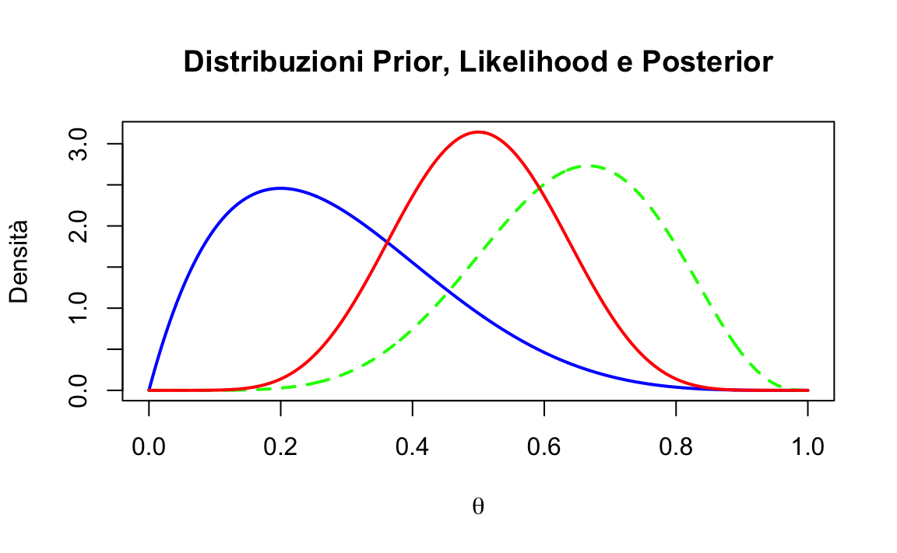
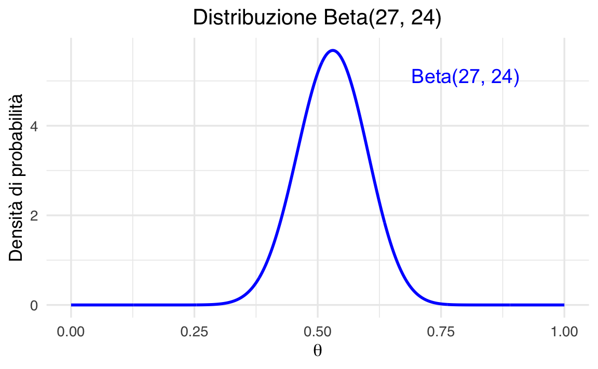
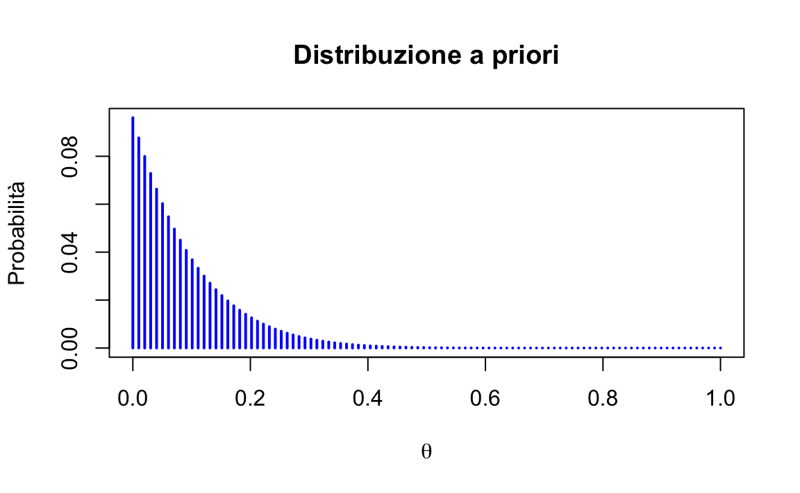
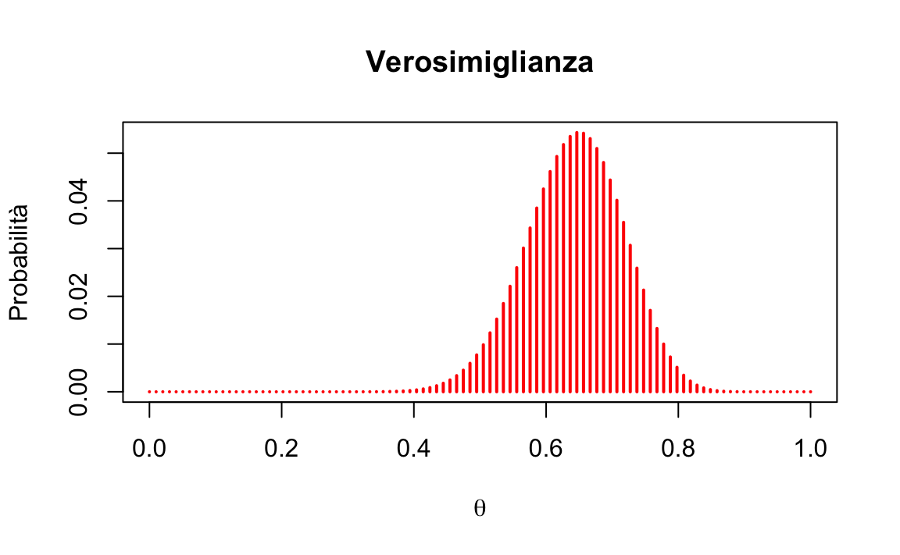
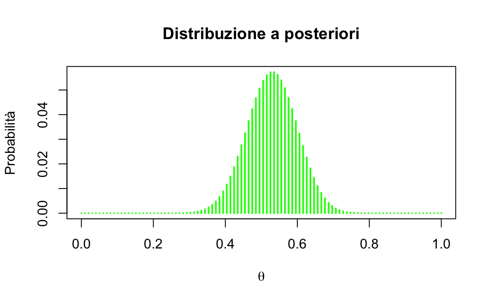

here::here("code", "_common.R") |>
source()
# Load packages
if (!requireNamespace("pacman")) install.packages("pacman")
pacman::p_load(mice)46 Distribuzioni coniugate (1)
In questo capitolo imparerai a
- calcolare la distribuzione a posteriori del caso beta-binomiale.
Prerequisiti
- Leggere il capitolo Conjugate Families del testo di Johnson et al. (2022).
Preparazione del Notebook
46.1 Introduzione
In questo capitolo, esploriamo il concetto di distribuzioni a priori coniugate e il loro ruolo nell’inferenza bayesiana. Utilizzando il modello beta-binomiale come esempio paradigmatico, dimostreremo come queste distribuzioni semplifichino l’analisi attraverso calcoli analitici diretti. L’uso di una distribuzione a priori coniugata non solo rende l’inferenza più agevole, ma fornisce anche una chiara visione del modo in cui le credenze a priori influenzano le conclusioni.
Per favorire la comprensione, procederemo in tre fasi principali:
- Introduzione del modello beta-binomiale.
- Analisi della distribuzione Beta e del suo ruolo come distribuzione a priori.
- Descrizione del processo di aggiornamento bayesiano e dei vantaggi derivanti dall’uso di distribuzioni coniugate.
46.2 Il Modello Beta-Binomiale
Il modello beta-binomiale è un esempio classico per analizzare una proporzione \(\theta\), ossia la probabilità di successo in una sequenza di prove binarie (ad esempio, successo/fallimento). Supponiamo di osservare \(y\) successi su \(n\) prove, dove ogni prova è indipendente e con la stessa probabilità di successo \(\theta\), che appartiene all’intervallo \([0,1]\).
La funzione di verosimiglianza, basata sulla distribuzione binomiale, è espressa come:
\[ \mathcal{Binomial}(y \mid n, \theta) = \binom{n}{y} \theta^y (1 - \theta)^{n - y}, \]
dove \(\binom{n}{y}\) è il coefficiente binomiale che conta il numero di modi in cui \(y\) successi possono verificarsi in \(n\) prove.
Per modellare la nostra conoscenza preliminare su \(\theta\), scegliamo una distribuzione a priori Beta, che rappresenta un’ampia gamma di credenze iniziali con parametri flessibili.
46.3 La Distribuzione Beta
La distribuzione Beta è definita come:
\[ \mathcal{Beta}(\theta \mid \alpha, \beta) = \frac{1}{B(\alpha, \beta)} \theta^{\alpha - 1} (1 - \theta)^{\beta - 1}, \quad \text{con } \theta \in (0, 1), \]
dove:
\(\alpha > 0\) e \(\beta > 0\) sono i iperparametri, che determinano la forma della distribuzione.
-
\(B(\alpha, \beta)\) è la funzione Beta di Eulero, calcolata come:
\[ B(\alpha, \beta) = \frac{\Gamma(\alpha)\Gamma(\beta)}{\Gamma(\alpha + \beta)}, \]
dove \(\Gamma(x)\) è la funzione Gamma, una generalizzazione del fattoriale.
Nel contesto bayesiano:
- \(\alpha -1\) rappresenta il numero ipotetico di “successi” a priori.
- \(\beta -1\) rappresenta il numero ipotetico di “fallimenti” a priori.
Ad esempio:
- Una distribuzione Beta(1, 1) è uniforme (0 successi a priori e 0 fallimenti), indicando totale incertezza iniziale (assenza di credenze informate).
- Una distribuzione Beta(10, 20) rappresenta una conoscenza a priori basata su 9 successi e 19 fallimenti ipotizzati, indicando una convinzione iniziale relativamente solida, poiché deriva da un totale di 28 osservazioni virtuali che riflettono le credenze precedenti.
Questa interpretazione consente di calibrare le credenze a priori in base all’evidenza disponibile o alla fiducia nella stima.
La distribuzione Beta è estremamente versatile:
- Forma: Valori diversi di \(\alpha\) e \(\beta\) producono distribuzioni simmetriche, asimmetriche o uniformi.
- Forza del prior: Valori elevati di \(\alpha\) e \(\beta\) riducono la varianza, riflettendo credenze più forti.
Questa flessibilità rende la distribuzione Beta una scelta ideale per rappresentare credenze iniziali su proporzioni.
46.4 Aggiornamento Bayesiano
L’aggiornamento bayesiano combina le informazioni iniziali (priori) con i dati osservati (verosimiglianza) per produrre una nuova distribuzione delle credenze (posteriori). Nel caso del modello beta-binomiale, questo processo è particolarmente semplice grazie alla “coniugazione”: il prior Beta e la verosimiglianza Binomiale producono una distribuzione a posteriori che appartiene ancora alla famiglia Beta.
46.4.1 Problema
Dato \(y\) successi su \(n\) prove, vogliamo aggiornare la nostra distribuzione a priori Beta con i dati osservati per ottenere una distribuzione a posteriori Beta. I parametri aggiornati della distribuzione a posteriori sono dati da:
\[ \alpha' = \alpha + y, \quad \beta' = \beta + n - y. \]
Esaminiamo passo per passo come si arriva a questo risultato.
46.4.2 Passaggi dell’Aggiornamento Bayesiano
46.4.2.1 1. Formula di Bayes
La regola di Bayes stabilisce che:
\[ p(\theta \mid y, n) \propto p(\theta) \cdot \mathcal{L}(\theta), \]
dove:
- \(p(\theta)\) è la distribuzione a priori,
- \(\mathcal{L}(\theta)\) è la verosimiglianza,
- \(\propto\) indica “proporzionale a”.
Ci concentriamo solo sui termini che dipendono da \(\theta\), il parametro di interesse che rappresenta la probabilità di successo.
46.4.2.2 2. Espressione del Prior
Il prior è una distribuzione Beta, definita come:
\[ p(\theta) = \theta^{\alpha-1} (1-\theta)^{\beta-1}, \]
dove:
-
\(\alpha\) e \(\beta\) sono i parametri che riflettono le credenze iniziali:
- \(\alpha\): successi attesi prima di osservare i dati,
- \(\beta\): insuccessi attesi prima di osservare i dati.
46.4.2.3 3. Espressione della Verosimiglianza
La verosimiglianza è data dalla distribuzione binomiale, che descrive la probabilità di osservare \(y\) successi su \(n\) prove:
\[ \mathcal{L}(\theta) \propto \theta^y (1-\theta)^{n-y}. \]
Qui:
- \(y\) è il numero di successi osservati,
- \(n\) è il numero totale di prove,
- \(\theta\) è la probabilità di successo.
46.4.2.4 4. Moltiplicazione di Prior e Verosimiglianza
Combinando il prior e la verosimiglianza otteniamo:
\[ p(\theta \mid y, n) \propto \underbrace{\theta^{\alpha-1} (1-\theta)^{\beta-1}}_{\text{Prior}} \cdot \underbrace{\theta^y (1-\theta)^{n-y}}_{\text{Verosimiglianza}}. \]
46.4.2.5 5. Raggruppamento dei Termini
Moltiplicando i termini simili, raggruppiamo gli esponenti di \(\theta\) e \(1-\theta\):
\[ p(\theta \mid y, n) \propto \theta^{(\alpha-1) + y} (1-\theta)^{(\beta-1) + (n-y)}. \]
46.4.2.6 6. Forma Finale
Semplificando gli esponenti, otteniamo:
\[ p(\theta \mid y, n) \propto \theta^{\alpha + y - 1} (1-\theta)^{\beta + n - y - 1}. \]
Questa espressione ha la forma di una distribuzione Beta con parametri aggiornati:
\[ \alpha' = \alpha + y, \quad \beta' = \beta + n - y. \]
46.4.2.7 7. Normalizzazione
Per ottenere una distribuzione di probabilità vera e propria, dobbiamo normalizzare dividendo per una costante di normalizzazione. La funzione Beta \(B(\alpha', \beta')\) è definita come:
\[ B(\alpha', \beta') = \int_0^1 \theta^{\alpha' - 1} (1-\theta)^{\beta' - 1} \, d\theta. \]
La distribuzione a posteriori normalizzata è quindi:
\[ p(\theta \mid y, n) = \frac{\theta^{\alpha' - 1} (1-\theta)^{\beta' - 1}}{B(\alpha', \beta')}. \]
46.4.3 Conclusione
I parametri aggiornati della distribuzione a posteriori sono:
- \(\alpha' = \alpha + y\): aggiorna il parametro dei successi con il numero di successi osservati,
- \(\beta' = \beta + n - y\): aggiorna il parametro degli insuccessi con il numero di insuccessi osservati.
46.4.4 Vantaggi del Modello Beta-Binomiale
- Semplicità analitica: La coniugatezza della distribuzione Beta-Binomiale semplifica i calcoli, rendendo immediato l’aggiornamento dei parametri.
- Interpretazione intuitiva: L’aggiornamento dei parametri \(\alpha\) e \(\beta\) mostra in modo trasparente come i dati influenzino le credenze.
In sintesi, il modello Beta-Binomiale è un esempio didattico fondamentale per comprendere l’inferenza bayesiana e rappresenta un punto di partenza ideale per approcci più avanzati.
Esempio 46.1 Nel Capitolo 44 abbiamo utilizzato il metodo basato su griglia per determinare la distribuzione a posteriori nel caso di \(y = 6\) successi su \(n = 9\) prove (vedi anche McElreath, 2020 per una discussione dettagliata). Ora esploriamo un approccio alternativo, sfruttando le proprietà delle famiglie coniugate.
La verosimiglianza binomiale per questo esperimento è espressa dalla seguente funzione:
\[ \mathcal{L}(\theta) \propto \theta^y (1-\theta)^{n-y}, \]
dove \(y = 6\) rappresenta il numero di successi e \(n = 9\) il numero totale di prove.
Scegliendo una distribuzione a priori Beta con parametri \(\alpha = 2\) e \(\beta = 5\), possiamo applicare il teorema di Bayes per calcolare i parametri aggiornati della distribuzione a posteriori. In base alla regola di aggiornamento per distribuzioni coniugate, otteniamo:
\[ \alpha' = \alpha + y = 2 + 6 = 8. \] \[ \beta' = \beta + n - y = 5 + 9 - 6 = 8. \]
La distribuzione a posteriori risultante è quindi una distribuzione Beta con parametri \(\mathcal{Beta}(8, 8)\).
Procediamo ora a visualizzare le tre distribuzioni rilevanti:
- Distribuzione a priori: \(\mathcal{Beta}(2, 2)\),
- Verosimiglianza binomiale: per \(y = 6\) e \(n = 9\),
- Distribuzione a posteriori: \(\text{Beta}(8, 5)\).
Ecco il codice R per generare il grafico comparativo:
# Definizione dei parametri
alpha_prior <- 2
beta_prior <- 5
y <- 6
n <- 9
# Parametri della distribuzione a posteriori
alpha_post <- alpha_prior + y
beta_post <- beta_prior + n - y
# Sequenza di valori di theta
theta <- seq(0, 1, length.out = 1000)
# Calcolo delle PDF
prior_pdf <- dbeta(theta, shape1 = alpha_prior, shape2 = beta_prior)
likelihood <- theta^y * (1 - theta)^(n - y)
# Normalizzazione della verosimiglianza
likelihood_integral <- sum(likelihood) * (theta[2] - theta[1])
normalized_likelihood <- likelihood / likelihood_integral
posterior_pdf <- dbeta(theta, shape1 = alpha_post, shape2 = beta_post)
# Creare un dataframe contenente i dati per il grafico
df <- data.frame(
theta = rep(theta, 3),
densita = c(prior_pdf, normalized_likelihood, posterior_pdf),
distribuzione = rep(c("Prior", "Likelihood", "Posterior"), each = length(theta))
)
# Creare il grafico
ggplot(df, aes(x = theta, y = densita, color = distribuzione)) +
geom_line(size = 1) + # Aggiungere le linee per le distribuzioni
scale_color_manual(values = c("Prior" = "blue", "Likelihood" = "green", "Posterior" = "red")) + # Assegnare i colori
labs(title = "Distribuzioni Prior, Likelihood e Posterior",
x = expression(theta),
y = "Densità",
color = "Distribuzione") + # Aggiungere titoli e label
theme(legend.position = "top") # Posizionare la legenda in alto
-
Curva blu: Prior \(\mathcal{Beta}(2, 5)\), che riflette le credenze iniziali prima dell’osservazione dei dati.
-
Curva verde: Likelihood (normalizzata), rappresenta l’evidenza fornita dai dati osservati.
- Curva rossa: Posterior \(\mathcal{Beta}(8, 8)\), risultato dell’aggiornamento bayesiano che combina prior e likelihood.
Nota sulla normalizzazione della verosimiglianza. La verosimiglianza binomiale non è una distribuzione di probabilità (il suo integrale non è pari a 1). Per rappresentarla visivamente accanto alla distribuzione a priori e a quella a posteriori, è necessario normalizzarla. Questo è fatto calcolando il suo integrale su \(\theta \in [0, 1]\) e dividendo la funzione per il risultato. La normalizzazione serve solo per la visualizzazione e non influisce sui calcoli analitici.
Esempio 46.2 Esaminiamo ora un esempio discuso da Johnson et al. (2022). In uno studio molto famoso, Stanley Milgram ha studiato la propensione delle persone a obbedire agli ordini delle figure di autorità, anche quando tali ordini potrebbero danneggiare altre persone (Milgram 1963). Nell’articolo, Milgram descrive lo studio come
consistente nell’ordinare a un soggetto ingenuo di somministrare una scossa elettrica a una vittima. Viene utilizzato un generatore di scosse simulato, con 30 livelli di tensione chiaramente contrassegnati che vanno da IS a 450 volt. Lo strumento porta delle designazioni verbali che vanno da Scossa Lieve a Pericolo: Scossa Grave. Le risposte della vittima, che è un complice addestrato dell’esperimentatore, sono standardizzate. Gli ordini di somministrare scosse vengono dati al soggetto ingenuo nel contesto di un ‘esperimento di apprendimento’ apparentemente organizzato per studiare gli effetti della punizione sulla memoria. Man mano che l’esperimento procede, al soggetto ingenuo viene ordinato di somministrare scosse sempre più intense alla vittima, fino al punto di raggiungere il livello contrassegnato Pericolo: Scossa Grave.
In altre parole, ai partecipanti allo studio veniva dato il compito di testare un altro partecipante (che in realtà era un attore addestrato) sulla loro capacità di memorizzare una serie di item. Se l’attore non ricordava un item, al partecipante veniva ordinato di somministrare una scossa all’attore e di aumentare il livello della scossa con ogni fallimento successivo. I partecipanti non erano consapevoli del fatto che le scosse fossero finte e che l’attore stesse solo fingendo di provare dolore dalla scossa.
Nello studio di Milgram, 26 partecipanti su 40 hanno somministrato scosse al livello “Pericolo: Scossa Grave”. Il problema richiede di costruire la distribuzione a posteriori della probabilità \(\theta\) di infliggere una scossa a l livello “Pericolo: Scossa Grave”, ipotizzando che uno studio precedente aveva stabilito che \(\theta\) segue una distribuzione Beta(1, 10).
Iniziamo a fornire una rappresentazione grafica della distribuzione a priori.
# Impostazione dei parametri della distribuzione Beta
alpha <- 1
beta_val <- 10
# Creazione di valori x per il plot
x_values <- seq(0, 1, length.out = 1000)
# Calcolo della densità di probabilità per ogni valore di x
beta_pdf <- dbeta(x_values, shape1 = alpha, shape2 = beta_val)
# Creare un dataframe contenente i dati per il grafico
df <- data.frame(
x = x_values,
densita = beta_pdf
)
# Creare il grafico
ggplot(df, aes(x = x, y = densita)) +
geom_line(color = "#b97c7c", size = 1) + # Aggiungere la linea per la densità
labs(title = "Distribuzione Beta(1, 10)", # Aggiungere il titolo
x = "x", # Label dell'asse x
y = "Densità di probabilità") + # Label dell'asse y
theme(plot.title = element_text(hjust = 0.5)) + # Centrare il titolo
geom_vline(xintercept = 0, color = "black", linetype = "dashed", size = 0.5) + # Linea verticale opzionale
geom_vline(xintercept = 1, color = "black", linetype = "dashed", size = 0.5) + # Linea verticale opzionale
annotate("text", x = 0.8, y = max(beta_pdf) * 0.9, label = "Beta(1, 10)", color = "#b97c7c", size = 5) # Aggiungere una legenda
La distribuzione a posteriori segue una distribuzione Beta con parametri aggiornati:
y <- 26
n <- 40
alpha_prior <- 1
beta_prior <- 10
alpha_post <- alpha_prior + y
beta_post <- beta_prior + n - y
alpha_post
#> [1] 27
beta_post
#> [1] 24Creazione di un grafico per la distribuzione a posteriori:
# Creazione di valori x per il plot
x_values <- seq(0, 1, length.out = 1000)
# Calcolo della densità di probabilità per ogni valore di x
beta_pdf <- dbeta(x_values, alpha_post, beta_post)
# Creare un dataframe contenente i dati per il grafico
df <- data.frame(
theta = x_values,
densita = beta_pdf
)
# Creare il grafico con ggplot2
ggplot(df, aes(x = theta, y = densita)) +
geom_line(color = "blue", size = 1) + # Aggiungere la linea per la densità
labs(title = "Distribuzione Beta(27, 24)", # Aggiungere il titolo
x = expression(theta), # Label dell'asse x usando espressioni matematiche
y = "Densità di probabilità") + # Label dell'asse y
theme(plot.title = element_text(hjust = 0.5)) + # Centrare il titolo
annotate("text", x = 0.8, y = max(beta_pdf) * 0.9, label = "Beta(27, 24)", color = "blue", size = 5) 
Calcolo della media a posteriori di \(\theta\):
alpha_post / (alpha_post + beta_post)
#> [1] 0.5294Calcolo della moda a posteriori:
(alpha_post - 1) / (alpha_post + beta_post - 2)
#> [1] 0.5306Calcolo della probabilità che \(\theta > 0.6\):
pbeta(0.6, alpha_post, beta_post, lower.tail = FALSE)
#> [1] 0.1562Ovvero:
1 - pbeta(0.6, alpha_post, beta_post)
#> [1] 0.1562Eseguiamo il problema utilizzando il metodo basato su griglia. Definiamo la griglia di interesse:
theta <- seq(0, 1, length.out = 100)Creiamo la distribuzione a priori:
prior <- dbeta(theta, alpha_prior, beta_prior)
# Normalizzazione della densità per ottenere una somma pari a 1
prior_normalized <- prior / sum(prior)
# Creare un dataframe contenente i dati per il grafico
df <- data.frame(
theta = theta,
probabilita = prior_normalized
)
# Creare il grafico con ggplot2
ggplot(df, aes(x = theta, y = probabilita)) +
geom_segment(aes(x = theta, xend = theta, y = 0, yend = probabilita),
color = "blue", size = 1) + # Linee verticali per rappresentare le probabilità
labs(title = "Distribuzione a priori", # Aggiungere il titolo
x = expression(theta), # Label dell'asse x usando espressioni matematiche
y = "Probabilità") + # Label dell'asse y
theme(plot.title = element_text(hjust = 0.5)) # Centrare il titolo
Creiamo la verosimiglianza:
lk <- dbinom(y, n, theta)
# Normalizzazione della verosimiglianza per ottenere una somma pari a 1
lk_normalized <- lk / sum(lk)
# Creare un dataframe contenente i dati per il grafico
df <- data.frame(
theta = theta,
probabilita = lk_normalized
)
# Creare il grafico con ggplot2
ggplot(df, aes(x = theta, y = probabilita)) +
geom_segment(aes(x = theta, xend = theta, y = 0, yend = probabilita),
color = "red", size = 1) + # Linee verticali per rappresentare la verosimiglianza
labs(title = "Verosimiglianza", # Aggiungere il titolo
x = expression(theta), # Label dell'asse x usando espressioni matematiche
y = "Probabilità") + # Label dell'asse y
theme(plot.title = element_text(hjust = 0.5)) # Centrare il titolo
Calcoliamo la distribuzione a posteriori:
post <- (prior * lk) / sum(prior * lk)
# Normalizzazione della verosimiglianza per ottenere una somma pari a 1
lk_normalized <- lk / sum(lk)
# Creare un dataframe contenente i dati per il grafico
df <- data.frame(
theta = theta,
probabilita = lk_normalized
)
# Creare il grafico con ggplot2
ggplot(df, aes(x = theta, y = probabilita)) +
geom_segment(aes(x = theta, xend = theta, y = 0, yend = probabilita),
color = "green", size = 1) + # Linee verticali per rappresentare la verosimiglianza
labs(title = "Distribuzione a posteriori", # Aggiungere il titolo
x = expression(theta), # Label dell'asse x usando espressioni matematiche
y = "Probabilità") + # Label dell'asse y
theme(plot.title = element_text(hjust = 0.5)) # Centrare il titolo
Estrazione di un campione dalla distribuzione a posteriori:
samples <- sample(theta, size = 1e6, replace = TRUE, prob = post)Troviamo la media a posteriori:
mean(samples)
#> [1] 0.5295Calcoliamo la probabilità che \(\theta > 0.6\):
mean(samples > 0.6)
#> [1] 0.1527Questo codice mantiene la struttura logica del problema e produce risultati equivalenti utilizzando R.
46.5 Principali distribuzioni coniugate
Esistono altre combinazioni di verosimiglianza e distribuzione a priori che producono una distribuzione a posteriori con la stessa forma della distribuzione a priori. Ecco alcune delle più note coniugazioni tra modelli statistici e distribuzioni a priori:
Nel modello Normale-Normale \(\mathcal{N}(\mu, \sigma^2_0)\), la distribuzione a priori è \(\mathcal{N}(\mu_0, \tau^2)\) e la distribuzione a posteriori è \(\mathcal{N}\left(\frac{\mu_0\sigma^2 + \bar{y}n\tau^2}{\sigma^2 + n\tau^2}, \frac{\sigma^2\tau^2}{\sigma^2 + n\tau^2} \right)\).
Nel modello Poisson-gamma \(\text{Po}(\theta)\), la distribuzione a priori è \(\Gamma(\lambda, \delta)\) e la distribuzione a posteriori è \(\Gamma(\lambda + n \bar{y}, \delta +n)\).
Nel modello esponenziale \(\text{Exp}(\theta)\), la distribuzione a priori è \(\Gamma(\lambda, \delta)\) e la distribuzione a posteriori è \(\Gamma(\lambda + n, \delta +n\bar{y})\).
Nel modello uniforme-Pareto \(\text{U}(0, \theta)\), la distribuzione a priori è \(\text{Pa}(\alpha, \varepsilon)\) e la distribuzione a posteriori è \(\text{Pa}(\alpha + n, \max(y_{(n)}, \varepsilon))\).
46.6 Riflessioni Conclusive
In conclusione, l’utilizzo di priori coniugati presenta vantaggi e svantaggi. Cominciamo con i vantaggi principali. Il principale vantaggio dell’adozione di distribuzioni a priori coniugate risiede nella loro capacità di rendere l’analisi della distribuzione a posteriori trattabile da un punto di vista analitico. Ad esempio, nel corso di questo capitolo abbiamo esaminato come sia possibile formulare la distribuzione a posteriori in seguito a un esperimento composto da una serie di prove di Bernoulli (con una verosimiglianza binomiale), utilizzando una distribuzione Beta sia per la prior che per il posteriore.
Tuttavia, è cruciale riconoscere che i modelli basati sul concetto di famiglie coniugate presentano delle limitazioni intrinseche. Le distribuzioni coniugate a priori sono disponibili solamente per distribuzioni di verosimiglianza di base e relativamente semplici. Per modelli complessi e più realistici, la ricerca di priori coniugati diventa spesso un compito estremamente arduo, limitando quindi la loro utilità. Inoltre, anche quando le distribuzioni a priori coniugate sono disponibili, un modello che ne fa uso potrebbe non essere sufficientemente flessibile per adattarsi alle nostre credenze iniziali. Ad esempio, un modello basato su una distribuzione normale è sempre unimodale e simmetrico rispetto alla media \(\mu\). Tuttavia, se le nostre conoscenze iniziali non sono simmetriche o non seguono una distribuzione unimodale, la scelta di una distribuzione a priori normale potrebbe non risultare la più adeguata (Johnson et al., 2022).
Esercizi
Problemi 1
Si consideri lo studio “An excess of positive results: Comparing the standard psychology literature with registered reports” di Scheel et al. (2021). In questo lavoro, gli autori confrontano il tasso di risultati positivi \(\theta\) ottenuti in studi psicologici pubblicati senza preregistrazione con quelli pubblicati con preregistrazione. Si utilizzi il tasso di successo riportato negli studi preregistrati per costruire una distribuzione a priori per il parametro \(\theta\).
Secondo i risultati degli studi preregistrati, gli autori riscontrano un tasso di successo del 43.66%, con un intervallo di confidenza al 95% [CI] = [31.91, 55.95]. Sulla base di questi dati, si costruisca una distribuzione beta come distribuzione a priori per \(\theta\), seguendo il metodo illustrato da Johnson et al. (2022).
Successivamente, utilizzando questa distribuzione beta come distribuzione a priori, si determini la distribuzione a posteriori utilizzando il metodo delle famiglie coniugate per due scenari distinti, basati su 152 studi osservati: (a) Un tasso di successo del 60% (b) Un tasso di successo del 96% (come riportato per gli studi non preregistrati da Scheel et al. (2021)).
Infine, si commentino i risultati derivanti dall’analisi delle distribuzioni a posteriori ottenute per entrambi gli scenari.
Soluzioni 1
# Caricamento delle librerie necessarie
library(ggplot2)
library(tidyr)
library(dplyr)
# Funzione per trovare i parametri della distribuzione beta
find_beta_parameters <- function(mean, lower, upper, conf_level = 0.95) {
# Funzione obiettivo da minimizzare
objective <- function(alpha) {
beta <- alpha * (1 - mean) / mean
predicted_ci <- qbeta(c((1-conf_level)/2, 1-(1-conf_level)/2), alpha, beta)
error <- (predicted_ci[1] - lower)^2 + (predicted_ci[2] - upper)^2
return(error)
}
# Ottimizzazione per trovare alpha
result <- optimize(objective, interval = c(0.1, 100))
alpha <- result$minimum
beta <- alpha * (1 - mean) / mean
return(list(alpha = alpha, beta = beta))
}
# Parametri degli studi preregistrati
mean_preregistered <- 0.4366
ci_lower <- 0.3191
ci_upper <- 0.5595
# Calcolo dei parametri della distribuzione beta a priori
prior_params <- find_beta_parameters(mean_preregistered, ci_lower, ci_upper)
alpha_prior <- prior_params$alpha
beta_prior <- prior_params$beta
# Dati osservati
n <- 152 # numero di studi
successes_60 <- round(0.60 * n) # scenario (a)
successes_96 <- round(0.96 * n) # scenario (b)
# Calcolo delle distribuzioni a posteriori
alpha_post_60 <- alpha_prior + successes_60
beta_post_60 <- beta_prior + (n - successes_60)
alpha_post_96 <- alpha_prior + successes_96
beta_post_96 <- beta_prior + (n - successes_96)
# Creazione del dataframe per il plotting
theta <- seq(0, 1, length.out = 1000)
df <- data.frame(
theta = rep(theta, 3),
density = c(
dbeta(theta, alpha_prior, beta_prior),
dbeta(theta, alpha_post_60, beta_post_60),
dbeta(theta, alpha_post_96, beta_post_96)
),
distribution = rep(c("Priori", "Posteriori (60%)", "Posteriori (96%)"),
each = length(theta))
)
# Creazione del grafico
p <- ggplot(df, aes(x = theta, y = density, color = distribution)) +
geom_line(size = 1) +
labs(
title = "Distribuzioni a Priori e a Posteriori",
x = expression(theta),
y = "Densità",
color = "Distribuzione"
) +
theme(legend.position = "bottom")
# Calcolo degli intervalli di credibilità al 95%
credible_intervals <- data.frame(
Distribution = c("Priori", "Posteriori (60%)", "Posteriori (96%)"),
Mean = c(
alpha_prior / (alpha_prior + beta_prior),
alpha_post_60 / (alpha_post_60 + beta_post_60),
alpha_post_96 / (alpha_post_96 + beta_post_96)
),
Lower = c(
qbeta(0.025, alpha_prior, beta_prior),
qbeta(0.025, alpha_post_60, beta_post_60),
qbeta(0.025, alpha_post_96, beta_post_96)
),
Upper = c(
qbeta(0.975, alpha_prior, beta_prior),
qbeta(0.975, alpha_post_60, beta_post_60),
qbeta(0.975, alpha_post_96, beta_post_96)
)
)
# Visualizzazione dei risultati
print("Parametri della distribuzione beta a priori:")
print(paste("alpha =", round(alpha_prior, 2)))
print(paste("beta =", round(beta_prior, 2)))
print("\nIntervalli di credibilità al 95%:")
print(credible_intervals)
# Visualizza il grafico
print(p)
Problemi 2
Tra i fattori che possono influenzare il rapporto tra i sessi alla nascita c’è la condizione materna di placenta previa, una condizione insolita della gravidanza in cui la placenta è impiantata in basso nell’utero, impedendo un normale parto vaginale del feto. Uno studio condotto in Germania ha esaminato il sesso dei neonati in casi di placenta previa e ha riscontrato che, su un totale di 980 nascite, 437 erano femmine.
Quanta evidenza fornisce questo studio a supporto dell’ipotesi che la proporzione di nascite femminili nella popolazione di placenta previa sia inferiore a 0.485, che rappresenta la proporzione di nascite femminili nella popolazione generale? (Esercizio tratto da Gelman et al. (1995))
Soluzioni 2
# Caricamento delle librerie necessarie
library(ggplot2)
# Dati osservati
n <- 980 # numero totale di nascite
y <- 437 # numero di femmine
p0 <- 0.485 # proporzione nella popolazione generale
# Calcolo della proporzione osservata
p_hat <- y/n
print(paste("Proporzione osservata di femmine:", round(p_hat, 3)))
# Test dell'ipotesi utilizzando il Bayes Factor
# H0: p = 0.485 vs H1: p < 0.485
# Funzione per calcolare la verosimiglianza marginale sotto H1
marginal_likelihood_h1 <- function(y, n, p_max = 0.485) {
# Integrazione numerica sulla distribuzione uniforme tra 0 e p_max
p_grid <- seq(0, p_max, length.out = 1000)
likelihood <- dbinom(y, n, p_grid)
prior <- dunif(p_grid, 0, p_max)
mean(likelihood * prior) * p_max
}
# Verosimiglianza sotto H0
likelihood_h0 <- dbinom(y, n, p0)
# Verosimiglianza marginale sotto H1
marg_lik_h1 <- marginal_likelihood_h1(y, n)
# Calcolo del Bayes Factor
bf10 <- marg_lik_h1 / likelihood_h0
print(paste("Bayes Factor (H1 vs H0):", round(bf10, 2)))
# Visualizzazione delle distribuzioni a posteriori
p_grid <- seq(0, 1, length.out = 1000)
likelihood <- dbinom(y, n, p_grid)
prior <- dunif(p_grid, 0, 1)
posterior <- likelihood * prior
posterior <- posterior / sum(posterior)
# Creazione del dataframe per il plotting
df <- data.frame(
p = p_grid,
Posterior = posterior / max(posterior) # normalizzato per la visualizzazione
)
# Creazione del grafico
p <- ggplot(df, aes(x = p, y = Posterior)) +
geom_line(size = 1) +
geom_vline(xintercept = p0, linetype = "dashed", color = "red") +
geom_vline(xintercept = p_hat, linetype = "dashed", color = "blue") +
labs(
title = "Distribuzione a Posteriori della Proporzione di Nascite Femminili",
x = "Proporzione di Nascite Femminili (p)",
y = "Densità a Posteriori (normalizzata)"
) +
annotate("text", x = p0, y = 0.1,
label = "Popolazione Generale",
angle = 90, vjust = -0.5, color = "red") +
annotate("text", x = p_hat, y = 0.1,
label = "Proporzione Osservata",
angle = 90, vjust = -0.5, color = "blue")
# Calcolo dell'intervallo di credibilità al 95%
sorted_p <- sort(p_grid)
cum_post <- cumsum(posterior)
lower <- sorted_p[which(cum_post > 0.025)[1]]
upper <- sorted_p[which(cum_post > 0.975)[1]]
print(paste("Intervallo di credibilità al 95%: [",
round(lower, 3), ",", round(upper, 3), "]"))
# Calcolo della probabilità a posteriori che p < 0.485
prob_less_than_p0 <- sum(posterior[p_grid < p0])
print(paste("Probabilità a posteriori che p < 0.485:",
round(prob_less_than_p0, 3)))
# Visualizza il grafico
print(p)
Problemi 3
Per valutare la sensibilità della soluzione precedente alla scelta della distribuzione a priori, ripetere l’esercizio utilizzando come distribuzione a priori per la proporzione di nascite femminili una distribuzione Beta(48.5, 51.5). Questa distribuzione è centrata su 0.485 e concentra la maggior parte della sua massa nell’intervallo [0.385, 0.585]. Interpretare i risultati ottenuti.
Soluzioni 3
# Caricamento delle librerie necessarie
library(ggplot2)
# Dati osservati
n <- 980 # numero totale di nascite
y <- 437 # numero di femmine
p0 <- 0.485 # proporzione nella popolazione generale
# Parametri della distribuzione beta a priori
alpha_prior <- 48.5
beta_prior <- 51.5
# Calcolo dei parametri della distribuzione beta a posteriori
alpha_post <- alpha_prior + y
beta_post <- beta_prior + (n - y)
# Creazione della griglia per il plotting
p_grid <- seq(0, 1, length.out = 1000)
# Calcolo delle densità
prior_density <- dbeta(p_grid, alpha_prior, beta_prior)
posterior_density <- dbeta(p_grid, alpha_post, beta_post)
# Creazione del dataframe per il plotting
df <- data.frame(
p = rep(p_grid, 2),
density = c(prior_density, posterior_density),
distribution = rep(c("Priori Beta(48.5, 51.5)", "Posteriori"), each = length(p_grid))
)
# Creazione del grafico
p <- ggplot(df, aes(x = p, y = density, color = distribution)) +
geom_line(size = 1) +
geom_vline(xintercept = p0, linetype = "dashed", color = "red") +
labs(
title = "Distribuzioni a Priori e a Posteriori",
subtitle = "Proporzione di Nascite Femminili con Placenta Previa",
x = "Proporzione di Nascite Femminili (p)",
y = "Densità",
color = "Distribuzione"
) +
theme(legend.position = "bottom") +
annotate("text", x = p0, y = max(posterior_density)/2,
label = "Popolazione Generale (0.485)",
angle = 90, vjust = -0.5, color = "red")
# Calcolo statistiche rilevanti
# Media a priori e posteriori
prior_mean <- alpha_prior / (alpha_prior + beta_prior)
post_mean <- alpha_post / (alpha_post + beta_post)
# Intervalli di credibilità al 95%
prior_ci <- qbeta(c(0.025, 0.975), alpha_prior, beta_prior)
post_ci <- qbeta(c(0.025, 0.975), alpha_post, beta_post)
# Probabilità a posteriori che p < 0.485
prob_less_than_p0 <- pbeta(p0, alpha_post, beta_post)
# Output dei risultati
cat("\nRisultati dell'analisi:\n")
cat("------------------------\n")
cat("Dati osservati:\n")
cat(sprintf("Numero totale di nascite: %d\n", n))
cat(sprintf("Numero di femmine: %d\n", y))
cat(sprintf("Proporzione osservata: %.3f\n\n", y/n))
cat("Analisi a priori:\n")
cat(sprintf("Media a priori: %.3f\n", prior_mean))
cat(sprintf("Intervallo di credibilità al 95%%: [%.3f, %.3f]\n\n",
prior_ci[1], prior_ci[2]))
cat("Analisi a posteriori:\n")
cat(sprintf("Media a posteriori: %.3f\n", post_mean))
cat(sprintf("Intervallo di credibilità al 95%%: [%.3f, %.3f]\n",
post_ci[1], post_ci[2]))
cat(sprintf("Probabilità che p < %.3f: %.3f\n", p0, prob_less_than_p0))
# Visualizza il grafico
print(p)# Caricamento delle librerie necessarie
library(ggplot2)
# Dati osservati
n <- 980 # numero totale di nascite
y <- 437 # numero di femmine
p0 <- 0.485 # proporzione nella popolazione generale
# Parametri della distribuzione beta a priori
alpha_prior <- 48.5
beta_prior <- 51.5
# Calcolo dei parametri della distribuzione beta a posteriori
alpha_post <- alpha_prior + y
beta_post <- beta_prior + (n - y)
# Creazione della griglia per il plotting
p_grid <- seq(0, 1, length.out = 1000)
# Calcolo delle densità
prior_density <- dbeta(p_grid, alpha_prior, beta_prior)
posterior_density <- dbeta(p_grid, alpha_post, beta_post)
# Creazione del dataframe per il plotting
df <- data.frame(
p = rep(p_grid, 2),
density = c(prior_density, posterior_density),
distribution = rep(c("Priori Beta(48.5, 51.5)", "Posteriori"), each = length(p_grid))
)
# Creazione del grafico
p <- ggplot(df, aes(x = p, y = density, color = distribution)) +
geom_line(size = 1) +
geom_vline(xintercept = p0, linetype = "dashed", color = "red") +
labs(
title = "Distribuzioni a Priori e a Posteriori",
subtitle = "Proporzione di Nascite Femminili con Placenta Previa",
x = "Proporzione di Nascite Femminili (p)",
y = "Densità",
color = "Distribuzione"
) +
theme(legend.position = "bottom") +
annotate("text", x = p0, y = max(posterior_density)/2,
label = "Popolazione Generale (0.485)",
angle = 90, vjust = -0.5, color = "red")
# Calcolo statistiche rilevanti
# Media a priori e posteriori
prior_mean <- alpha_prior / (alpha_prior + beta_prior)
post_mean <- alpha_post / (alpha_post + beta_post)
# Intervalli di credibilità al 95%
prior_ci <- qbeta(c(0.025, 0.975), alpha_prior, beta_prior)
post_ci <- qbeta(c(0.025, 0.975), alpha_post, beta_post)
# Probabilità a posteriori che p < 0.485
prob_less_than_p0 <- pbeta(p0, alpha_post, beta_post)
# Output dei risultati
cat("\nRisultati dell'analisi:\n")
cat("------------------------\n")
cat("Dati osservati:\n")
cat(sprintf("Numero totale di nascite: %d\n", n))
cat(sprintf("Numero di femmine: %d\n", y))
cat(sprintf("Proporzione osservata: %.3f\n\n", y/n))
cat("Analisi a priori:\n")
cat(sprintf("Media a priori: %.3f\n", prior_mean))
cat(sprintf("Intervallo di credibilità al 95%%: [%.3f, %.3f]\n\n",
prior_ci[1], prior_ci[2]))
cat("Analisi a posteriori:\n")
cat(sprintf("Media a posteriori: %.3f\n", post_mean))
cat(sprintf("Intervallo di credibilità al 95%%: [%.3f, %.3f]\n",
post_ci[1], post_ci[2]))
cat(sprintf("Probabilità che p < %.3f: %.3f\n", p0, prob_less_than_p0))
# Visualizza il grafico
print(p)I risultati mostrano che:
La proporzione osservata nel campione (0.446) è inferiore al valore di riferimento della popolazione generale (0.485)
La distribuzione a priori Beta(48.5, 51.5):
- Ha media 0.485
- Riflette la nostra conoscenza iniziale sulla proporzione di nascite femminili
- Fornisce un’incertezza ragionevole attorno al valore di riferimento
- La distribuzione a posteriori:
- Ha una media di circa 0.447
- L’intervallo di credibilità al 95% esclude il valore di riferimento 0.485
- Indica una probabilità elevata che la vera proporzione sia inferiore a 0.485
- Questa analisi suggerisce che:
- Esiste un’associazione tra placenta previa e una minor proporzione di nascite femminili
- L’effetto è moderato ma statisticamente rilevante
- La stima è abbastanza precisa grazie alla dimensione campionaria considerevole
Problemi 4
In uno studio recente, Gori et al. (2024) hanno esaminato un campione di 202 adulti italiani e hanno riscontrato una prevalenza di mancini del 6.4%. Una meta-analisi di Papadatou-Pastou et al. (2020), condotta su un totale di 2,396,170 soggetti, riporta che la proporzione di mancini varia tra il 9.3% e il 18.1%, a seconda di come viene misurata la lateralità manuale. Inoltre, Papadatou-Pastou et al. (2020) mostrano che la prevalenza della lateralità manuale varia tra i paesi e nel tempo. Considerata questa incertezza, si determini la distribuzione a posteriori che combina i dati dello studio di Gori et al. (2024) con le informazioni pregresse fornite da Papadatou-Pastou et al. (2020). Le informazioni di Papadatou-Pastou et al. (2020) possono essere espresse in termini di una distribuzione Beta(8, 60).
Soluzioni 4
# Caricamento delle librerie necessarie
library(ggplot2)
# Dati dello studio di Gori et al. (2024)
n <- 202 # dimensione del campione
y <- round(0.064 * n) # numero di mancini (6.4% del campione)
# Parametri della distribuzione beta a priori (da Papadatou-Pastou et al., 2020)
alpha_prior <- 8
beta_prior <- 60
# Calcolo dei parametri della distribuzione beta a posteriori
alpha_post <- alpha_prior + y
beta_post <- beta_prior + (n - y)
# Creazione della griglia per il plotting
p_grid <- seq(0, 0.3, length.out = 1000) # limitato a 0.3 per migliore visualizzazione
# Calcolo delle densità
prior_density <- dbeta(p_grid, alpha_prior, beta_prior)
posterior_density <- dbeta(p_grid, alpha_post, beta_post)
# Creazione del dataframe per il plotting
df <- data.frame(
p = rep(p_grid, 2),
density = c(prior_density, posterior_density),
distribution = rep(c("Priori (Papadatou-Pastou et al., 2020)",
"Posteriori (con dati Gori et al., 2024)"),
each = length(p_grid))
)
# Calcolo statistiche rilevanti
prior_mean <- alpha_prior / (alpha_prior + beta_prior)
post_mean <- alpha_post / (alpha_post + beta_post)
prior_ci <- qbeta(c(0.025, 0.975), alpha_prior, beta_prior)
post_ci <- qbeta(c(0.025, 0.975), alpha_post, beta_post)
# Creazione del grafico
p <- ggplot(df, aes(x = p, y = density, color = distribution)) +
geom_line(size = 1) +
geom_vline(xintercept = 0.064, linetype = "dashed", color = "red") +
labs(
title = "Distribuzione della Prevalenza dei Mancini",
subtitle = "Confronto tra Distribuzione a Priori e a Posteriori",
x = "Proporzione di Mancini",
y = "Densità",
color = "Distribuzione"
) +
theme(legend.position = "bottom") +
annotate("text", x = 0.064, y = max(posterior_density)/2,
label = "Valore osservato (6.4%)",
angle = 90, vjust = -0.5, color = "red")
# Output dei risultati
cat("\nRisultati dell'analisi:\n")
cat("------------------------\n")
cat("Distribuzione a priori (Papadatou-Pastou et al., 2020):\n")
cat(sprintf("Media: %.1f%%\n", prior_mean * 100))
cat(sprintf("Intervallo di credibilità al 95%%: [%.1f%%, %.1f%%]\n\n",
prior_ci[1] * 100, prior_ci[2] * 100))
cat("Dati osservati (Gori et al., 2024):\n")
cat(sprintf("Campione: %d individui\n", n))
cat(sprintf("Mancini osservati: %d (%.1f%%)\n\n", y, y/n * 100))
cat("Distribuzione a posteriori:\n")
cat(sprintf("Media: %.1f%%\n", post_mean * 100))
cat(sprintf("Intervallo di credibilità al 95%%: [%.1f%%, %.1f%%]\n",
post_ci[1] * 100, post_ci[2] * 100))
# Visualizza il grafico
print(p)# Caricamento delle librerie necessarie
library(ggplot2)
# Dati dello studio di Gori et al. (2024)
n <- 202 # dimensione del campione
y <- round(0.064 * n) # numero di mancini (6.4% del campione)
# Parametri della distribuzione beta a priori (da Papadatou-Pastou et al., 2020)
alpha_prior <- 8
beta_prior <- 60
# Calcolo dei parametri della distribuzione beta a posteriori
alpha_post <- alpha_prior + y
beta_post <- beta_prior + (n - y)
# Creazione della griglia per il plotting
p_grid <- seq(0, 0.3, length.out = 1000) # limitato a 0.3 per migliore visualizzazione
# Calcolo delle densità
prior_density <- dbeta(p_grid, alpha_prior, beta_prior)
posterior_density <- dbeta(p_grid, alpha_post, beta_post)
# Creazione del dataframe per il plotting
df <- data.frame(
p = rep(p_grid, 2),
density = c(prior_density, posterior_density),
distribution = rep(c("Priori (Papadatou-Pastou et al., 2020)",
"Posteriori (con dati Gori et al., 2024)"),
each = length(p_grid))
)
# Calcolo statistiche rilevanti
prior_mean <- alpha_prior / (alpha_prior + beta_prior)
post_mean <- alpha_post / (alpha_post + beta_post)
prior_ci <- qbeta(c(0.025, 0.975), alpha_prior, beta_prior)
post_ci <- qbeta(c(0.025, 0.975), alpha_post, beta_post)
# Creazione del grafico
p <- ggplot(df, aes(x = p, y = density, color = distribution)) +
geom_line(size = 1) +
geom_vline(xintercept = 0.064, linetype = "dashed", color = "red") +
labs(
title = "Distribuzione della Prevalenza dei Mancini",
subtitle = "Confronto tra Distribuzione a Priori e a Posteriori",
x = "Proporzione di Mancini",
y = "Densità",
color = "Distribuzione"
) +
theme(legend.position = "bottom") +
annotate("text", x = 0.064, y = max(posterior_density)/2,
label = "Valore osservato (6.4%)",
angle = 90, vjust = -0.5, color = "red")
# Output dei risultati
cat("\nRisultati dell'analisi:\n")
cat("------------------------\n")
cat("Distribuzione a priori (Papadatou-Pastou et al., 2020):\n")
cat(sprintf("Media: %.1f%%\n", prior_mean * 100))
cat(sprintf("Intervallo di credibilità al 95%%: [%.1f%%, %.1f%%]\n\n",
prior_ci[1] * 100, prior_ci[2] * 100))
cat("Dati osservati (Gori et al., 2024):\n")
cat(sprintf("Campione: %d individui\n", n))
cat(sprintf("Mancini osservati: %d (%.1f%%)\n\n", y, y/n * 100))
cat("Distribuzione a posteriori:\n")
cat(sprintf("Media: %.1f%%\n", post_mean * 100))
cat(sprintf("Intervallo di credibilità al 95%%: [%.1f%%, %.1f%%]\n",
post_ci[1] * 100, post_ci[2] * 100))
# Visualizza il grafico
print(p)L’analisi bayesiana della prevalenza dei mancini combina le informazioni provenienti dalla meta-analisi di Papadatou-Pastou et al. (2020) con i dati più recenti di Gori et al. (2024). Di seguito sono riportati i principali risultati:
-
Distribuzione a priori (basata su Papadatou-Pastou et al., 2020):
- Modellata come una distribuzione Beta(8, 60).
- Presenta una media intorno all’11,8%.
- Riflette la variabilità osservata nella meta-analisi.
- L’intervallo di credibilità al 95% copre approssimativamente il range 9,3%-18,1%, come riportato nello studio.
- Modellata come una distribuzione Beta(8, 60).
-
Dati osservati (Gori et al., 2024):
- 202 partecipanti italiani.
- 13 mancini, corrispondenti al 6,4% del campione.
- Questo valore è inferiore alla media stimata dalla meta-analisi globale.
- 202 partecipanti italiani.
-
Distribuzione a posteriori:
- Combina le informazioni a priori con i nuovi dati osservati.
- La media a posteriori si è spostata verso il basso rispetto alla distribuzione a priori.
- L’intervallo di credibilità si è ristretto, indicando una riduzione dell’incertezza.
- Maggiore peso è stato attribuito ai dati italiani rispetto alla meta-analisi globale.
- Combina le informazioni a priori con i nuovi dati osservati.
-
Interpretazione:
- La stima finale suggerisce una prevalenza di mancini nella popolazione italiana inferiore alla media globale.
- Questo risultato potrebbe riflettere specificità culturali o metodologiche dello studio italiano.
- L’incertezza nella stima finale è diminuita rispetto alla meta-analisi, ma rimane significativa.
- I risultati supportano l’ipotesi di una variabilità geografica nella prevalenza della mancinismo.
- La stima finale suggerisce una prevalenza di mancini nella popolazione italiana inferiore alla media globale.
La distribuzione a posteriori fornisce una sintesi equilibrata tra le conoscenze globali precedenti e i dati specifici della popolazione italiana, suggerendo che potrebbero esistere peculiarità culturali o demografiche che influenzano la prevalenza del mancinismo in Italia.
Informazioni sull’Ambiente di Sviluppo
sessionInfo()
#> R version 4.4.2 (2024-10-31)
#> Platform: aarch64-apple-darwin20
#> Running under: macOS Sequoia 15.3.1
#>
#> Matrix products: default
#> BLAS: /Library/Frameworks/R.framework/Versions/4.4-arm64/Resources/lib/libRblas.0.dylib
#> LAPACK: /Library/Frameworks/R.framework/Versions/4.4-arm64/Resources/lib/libRlapack.dylib; LAPACK version 3.12.0
#>
#> locale:
#> [1] C/UTF-8/C/C/C/C
#>
#> time zone: Europe/Rome
#> tzcode source: internal
#>
#> attached base packages:
#> [1] stats graphics grDevices utils datasets methods base
#>
#> other attached packages:
#> [1] mice_3.17.0 thematic_0.1.6 MetBrewer_0.2.0 ggokabeito_0.1.0
#> [5] see_0.10.0 gridExtra_2.3 patchwork_1.3.0 bayesplot_1.11.1
#> [9] psych_2.4.12 scales_1.3.0 markdown_1.13 knitr_1.49
#> [13] lubridate_1.9.4 forcats_1.0.0 stringr_1.5.1 dplyr_1.1.4
#> [17] purrr_1.0.4 readr_2.1.5 tidyr_1.3.1 tibble_3.2.1
#> [21] ggplot2_3.5.1 tidyverse_2.0.0 rio_1.2.3 here_1.0.1
#>
#> loaded via a namespace (and not attached):
#> [1] gtable_0.3.6 shape_1.4.6.1 xfun_0.50 htmlwidgets_1.6.4
#> [5] lattice_0.22-6 tzdb_0.4.0 Rdpack_2.6.2 vctrs_0.6.5
#> [9] tools_4.4.2 generics_0.1.3 parallel_4.4.2 pan_1.9
#> [13] pacman_0.5.1 jomo_2.7-6 pkgconfig_2.0.3 Matrix_1.7-2
#> [17] lifecycle_1.0.4 compiler_4.4.2 farver_2.1.2 munsell_0.5.1
#> [21] mnormt_2.1.1 codetools_0.2-20 htmltools_0.5.8.1 glmnet_4.1-8
#> [25] nloptr_2.1.1 pillar_1.10.1 MASS_7.3-64 reformulas_0.4.0
#> [29] iterators_1.0.14 rpart_4.1.24 boot_1.3-31 mitml_0.4-5
#> [33] foreach_1.5.2 nlme_3.1-167 tidyselect_1.2.1 digest_0.6.37
#> [37] stringi_1.8.4 labeling_0.4.3 splines_4.4.2 rprojroot_2.0.4
#> [41] fastmap_1.2.0 grid_4.4.2 colorspace_2.1-1 cli_3.6.4
#> [45] magrittr_2.0.3 survival_3.8-3 broom_1.0.7 withr_3.0.2
#> [49] backports_1.5.0 timechange_0.3.0 rmarkdown_2.29 nnet_7.3-20
#> [53] lme4_1.1-36 hms_1.1.3 evaluate_1.0.3 rbibutils_2.3
#> [57] rlang_1.1.5 Rcpp_1.0.14 glue_1.8.0 minqa_1.2.8
#> [61] rstudioapi_0.17.1 jsonlite_1.8.9 R6_2.6.1Bibliografia
Gelman, A., Carlin, J. B., Stern, H. S., & Rubin, D. B. (1995). Bayesian data analysis. Chapman; Hall/CRC.
Gori, B., Grippo, A., Focardi, M., & Lolli, F. (2024). The Italian version of Edinburgh Handedness Inventory: Translation, transcultural adaptation, and validation in healthy subjects. Laterality, 29(2), 151–168.
Johnson, A. A., Ott, M., & Dogucu, M. (2022). Bayes Rules! An Introduction to Bayesian Modeling with R. CRC Press.
McElreath, R. (2020). Statistical rethinking: A Bayesian course with examples in R and Stan (2nd Edition). CRC Press.
Papadatou-Pastou, M., Ntolka, E., Schmitz, J., Martin, M., Munafò, M. R., Ocklenburg, S., & Paracchini, S. (2020). Human handedness: A meta-analysis. Psychological bulletin, 146(6), 481–524.
Scheel, A. M., Schijen, M. R., & Lakens, D. (2021). An excess of positive results: Comparing the standard psychology literature with registered reports. Advances in Methods and Practices in Psychological Science, 4(2), 25152459211007467.